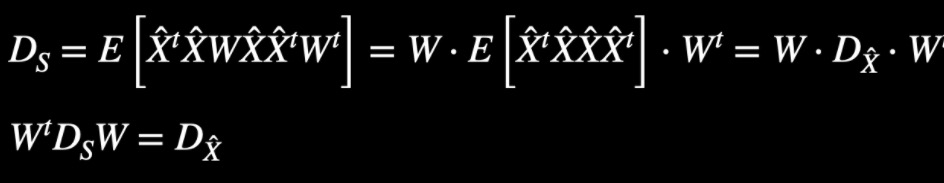
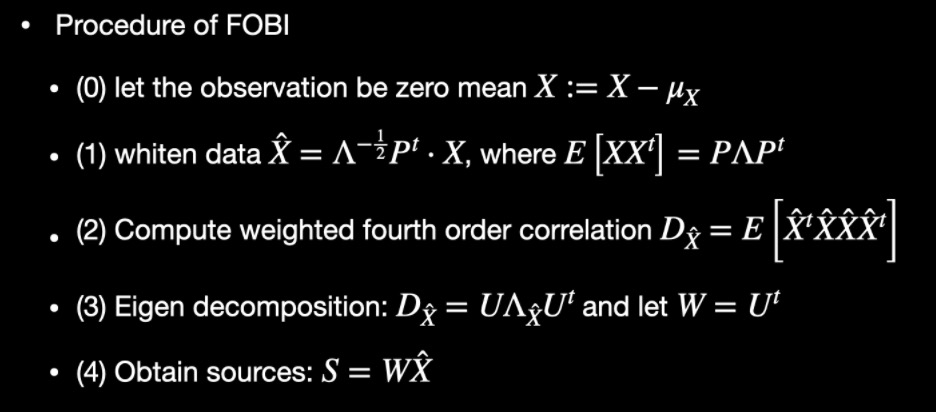

Additional Notes in ICA especially for FOBI
Suppose $A=(a_1, a_2,\cdots, a_N)^t$ is a $n$ dimension vectors, you can actually carry out the PCA $S = WA$ in the following ways:
$E[SS^t]$ should be diagonal, since the components inside $S$ such as $s_1$ and $s_2$ should be uncorrelated, that is $E[s_1s_2]=0=E[s_1]E[s_2]$. (Here, we suppose that $A$ has zero mean, as well as $S=WA$)
The point is that, the uncorrelation is simply second order moment decomposition, which is not enough to make good use of the independence assumption (actually far from independence). Recall that the independent variables are uncorrelated but uncorrelated R.V. are generally not independent, except for the case the two R.V. are both follow binary distribution or joint Gaussian distribution. We should find something more, either higher order tensor decomposition, or use neg-entropy as a virtue / specific excellence / indicator of independence.
if you choose some function other than higher order moment (such as Kurtosis or neg-entropy), you will get some kind of Fast-ICA algorithm in, which I will introduce to you guys in the following lecture. But if you choose to use the higher order tensor decomposition, you can still get a bunch of algorithm depends on which moment or the function of moment you choose to use. If you use the third moment, it will be harder to evaluate compared to fourth order, but you can still go to the Robust FOBI algorithm given by Vardoso. If you use the fourth moment, it will give you FOBI algorithm which is one of the most commonly used ICA implement via tensor decomposition. You can also use something looks weird to get Joint Approximation Diagonalization of Eigen- matrices (JADE), you can find a short introduction in hidden slide.
Back to the FOBI algorithm, we will evaluate $D_A:=E[A^tAAA^t]$ for any given random vector $A=(a_1, a_2,\cdots, a_N)^t$ and all the entry of matrix $D_A$ will represent some kind of fourh order moment, like the following cases Bhiksha display in class
$S=(s_1, s_2)^t$, then $D_S$ is a 2 by 2 matrix as follow: $$D_S = \begin{bmatrix} (s_1^2+s_2^2)s_1^2 & (s_1^2+s_2^2)s_1s_2 \ (s_1^2+s_2^2)s_2s_1 & (s_1^2+s_2^2)s_2^2 \end{bmatrix}$$
Ingeneral, $D_A$ will be diagonal if the components of $A$ (that is, $a_1$, $a_2$, …, $a_N$ are pairwisely independent). ALthough not vise versa, we can get some kind of “pseudo independence” if we can diagonalize $D_A$. So what FOBI-ICA does is actually find some useful $W$ (and turn $X$ to $\hat{X}$ at the same time actually), to get a diagonalized $D_S$ correspondent to the (pseudo) independent source $S$ from the indicator matrix $D_X$ from your observation $X$.
But, recall that $S=W_0X$, the problem is that if you attempt to calculate $D_S=E[(X^tW_0^t)(W_0X)(W_0X)(X^tW_0^t)]$, you will feel Frustrated and get cold feet. So the strategy is to whiten the data by the following steps (forget the intuition I'm trying to convey in the slides why people came out the fancy idea that we can actually whiten the data):
-
$X:=X-\mu_x$ to make X zero mean
-
evaluate the eighen decomposition (also singular value decomposition) of $E[XX^t]=P\Lambda P^t$, where $\Lambda$ is a diagnal matrix and $P$ is a unitary matrix
-
whiten the data $\hat{X}=\Lambda^{-0.5}P^t$
In this way, you can prove that $e[\hat{X}\hat{X}^t] = I$ and the transformation between $\hat{X}$ and $S$ is a unitary matrix. (I proved them in class, hopfully they did not scare you.)
And with these 2 good properties listed above, we can come to the following equation from $D_S=E[(\hat{X}^tW^t)(W\hat{X})(W\hat{X})(\hat{X}^tW^t)]$:

this means that if you would like to diagonalize matrix $D_S$ with parameter $W$, the only thing you need to do is to whiten the data from $X$ to $\hat{X}$ and get the singular value decomposition / eigen value decomposition of indecator matrix (consist of the forth order moment) of $\hat{X}$. From the decomposition, you can get the transformation $W$ from $X$ to $S$.
To sum up, you simply get the following procedure

P.S. some remarks for FOBI
-
(0) Someone read the lecture notes on ICA in previous year and ask the relation between FOBI and Kurtosis / Neg-entropy and Fast-ICA. FOBI use tensor decomposition to implement the (pseudo) independent while Fast-ICA use the measure of Gaussian, Kurtosis and Neg-entropy are two kind of them. You can also try the one with mutual information function although we did not mentioned this function in the information theory lecture last week.
-
(1) FOBI is one of the first and most simple ICA methods and you can easily implement it on your own as ski-learn dows not implement it for you I believe.
-
(2) Whiten data can reduce the freedom dimension of $W$ when you tring to diagonalize $D_S=E[(X^tW_0^t)(W_0X)(W_0X)(X^tW_0^t)]$ and fasten the convergence. To be specific, the dimension of $W_0$ is $N^2$ or $N^2-1$ if condition on $\left| W_0 \right|=1$, while the dimension of unitary matrix $W$ is only $\frac{N^2-N}{2}$.
-
(3) The most notable drawback of FOBI require all the sources have quite distant in their fourth order moment values, implicating the failure in case of having several mechanisms characterized with the same distribution
-
(4) FastICA based on Gaussian measure generally performances better compared to FOBI or something like that in case of high-dimensional data. So industry often chooses Fast-ICA for linear cases
-
(5) Fast-ICA based on Kurtosis is not robust enough as you can not get exact Kurtosis from less sample / observation of the variable, although it is easier to implement. While Fast-ICA based on Neg-entropy is not use Neg-entropy itself actually, as we all see that you can hardly evaluate Neg-entropy from even 1 million sample of observation. The approach is to find some approximation to Neg-entropy which can both be a robust measure to Gaussian, and not that hard to evaluate from the samples / observation. The latter should be the most commonly used approaches on Fast-ICA
Hopefully, this additional note can help you guys clear the following question: (1) why fourth order? (2) where is the tensor decomposition happens? (3) why we need to whiten the data (4) why $W$ is unitary matrix (5) relation between fobi and fast-ica and other methods (6) what is the connection between ICA and PCA …
If you still have some questions about it, you can refer to the lecture notes.
马英浩 (Nicolaus) MA Yinghao
Mater Student in School of Music, College of Fine Arts
MA Yinghao, master student of CMU. Research interests include music information retireval, audio signal processing and machine learning matter.